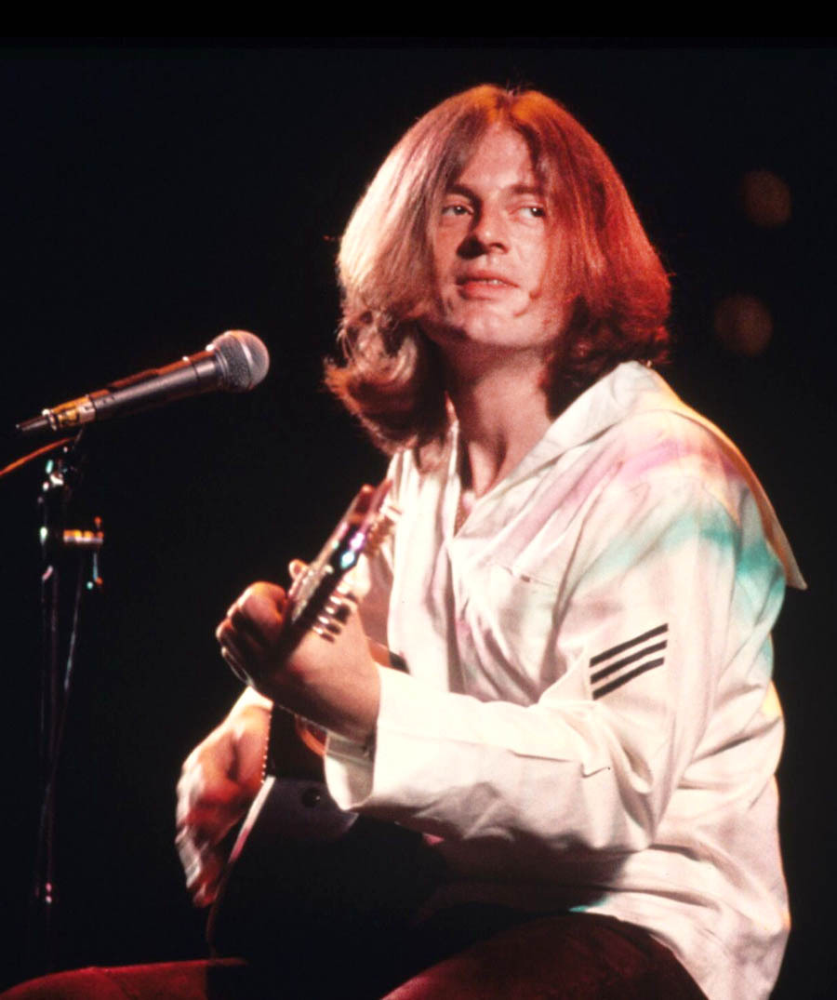

Home
Membri
Storia
Breve presentazione!

Jimmy Page (Chitarra)
Jimmy Page era il chitarrista, compositore e produttore indiscusso dei Led Zeppelin, considerato uno dei più grandi e versatili chitarristi di tutti i tempi. La sua carriera iniziò molto prima della band; nella metà degli anni '60, era uno dei session man più richiesti a Londra, suonando la chitarra su innumerevoli successi pop e rock.
Successivamente, si unì agli Yardbirds, un'altra band iconica, prendendone il controllo e rimodellandola. Quando gli Yardbirds si sciolsero nel 1968, Page fondò i "New Yardbirds" (che presto diventarono i Led Zeppelin) con l'intenzione di esplorare un rock più pesante e sperimentale. Il suo stile univa riff hard rock pesanti, complessi passaggi folk acustici e assoli innovativi, spesso utilizzando un archetto di violoncello per creare effetti sonori unici.

Robert Plant (Voce)
Robert Plant è il leggendario cantante e paroliere dei Led Zeppelin, noto per la sua estensione vocale mozzafiato, la potente presenza scenica e il carisma da frontman . Originario delle Midlands inglesi, prima di unirsi ai Led Zeppelin aveva fatto parte di diverse band blues e folk locali, sviluppando una profonda passione per la musica blues americana e per le sonorità celtiche.
La sua voce è stata il marchio di fabbrica della band, spaziando dai sussurri eterei di brani acustici all'urlo penetrante dei classici hard rock. Oltre a essere il vocalist, Plant era il principale autore dei testi, spesso ispirati dalla mitologia norrena, dal fantasy (come Il Signore degli Anelli) e dalla spiritualità orientale, portando un lirismo inusuale e profondo nel panorama del rock.

John Bonham (Batteria)
John Bonham, soprannominato "Bonzo", era il leggendario batterista dei Led Zeppelin. Proveniente anche lui dalle Midlands, Bonham era rinomato per la sua velocità, potenza e per un senso del groove ineguagliabile.
Prima di unirsi al gruppo su suggerimento di Robert Plant (con cui aveva suonato in diverse band locali), Bonham aveva affinato le sue abilità suonando in club e come turnista. Il suo assolo in "Moby Dick" era un momento clou dei loro concerti, spesso lungo e potente, eseguito a mani nude. La sua morte prematura nel 1980 portò allo scioglimento della band, poiché i membri concordarono che non si poteva continuare a chiamarsi Led Zeppelin senza di lui.

John Paul Jones
John Paul Jones era il bassista, tastierista e arrangiatore di grande talento dei Led Zeppelin. Come Jimmy Page, anche Jones era un esperto musicista di sessione nella scena musicale londinese prima di formare la band. Il suo lavoro come arrangiatore includeva collaborazioni con artisti del calibro dei Rolling Stones, Dusty Springfield e Donovan.
Jones portò nella band un senso di disciplina e conoscenza musicale che bilanciava l'improvvisazione dei suoi compagni. Sebbene fosse principalmente noto per il suo basso ritmico e innovativo, il suo contributo con le tastiere (organo, mellotron, sintetizzatori) era fondamentale per l'eclettismo sonoro della band, introducendo elementi di folk, musica orchestrale e funk.